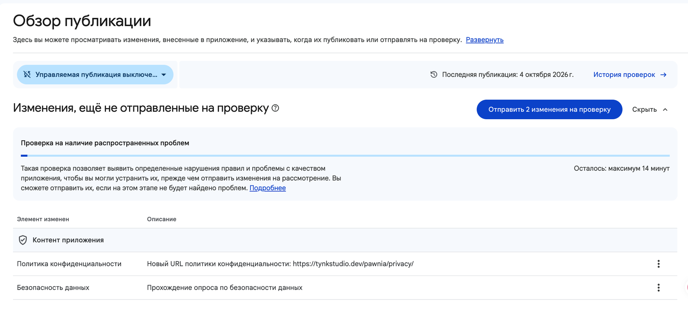

2.6 Отправка на проверку
Все декларации (Политика конфиденциальности, Безопасность данных, Реклама, Рекламный идентификатор) сохраняются как черновик и ничего не меняют на странице приложения, пока ты не отправишь их явно отсюда — с «Обзора публикации», того самого пункта меню из шага 2.1.
Обзор публикации
Здесь собраны все несохранённые изменения по контенту приложения — отдельно от самого релиза сборки (шаг 2.2). Можно отправить и то и другое независимо друг от друга.

«Отправить N изменения на проверку»
Запускает автоматическую проверку на типовые проблемы (до ~14 минут) и затем ставит изменения в очередь к публикации. Это декларации контента, не билд — после этого статус версии (шаг 2.2) не меняется.
Публикация приложения →Политика конфиденциальности
Изменение, которое попадёт в проверку — новый URL, который мы указывали на шаге 2.3/2.4.
Безопасность данных
«Прохождение опроса по безопасности данных» — весь визард с шага 2.4 одним пунктом в списке изменений.